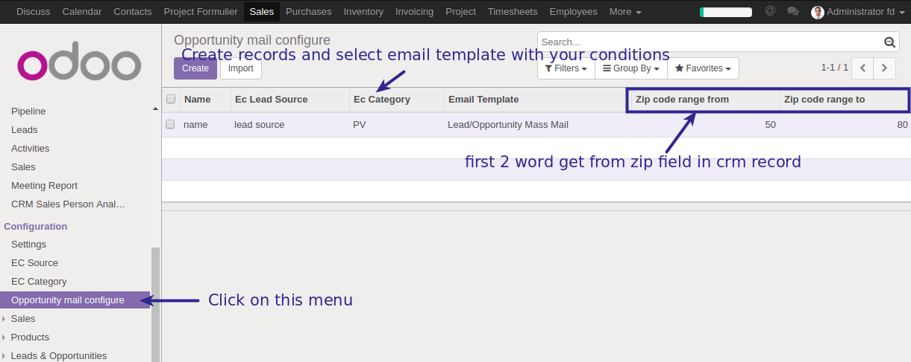

Send different Mail with different format(template) to customer on Convert lead to opportunity based on some fields comparision.
How It Works
Create records in new model (opportunity.mail.configure)

Add some field in new model, it's same field of crm lead records.
user can create many records with different fields value
it's use for select email template for send mail to customer on convert of lead to opportunity
here show range of zip field, lead have also zip name field, if lead have zip field value then system get first 2 word of that field value and compare with 'opportunity.mail.configure' records range fields, if lead zip first 2 word come between range from and range to then only template use for send mail